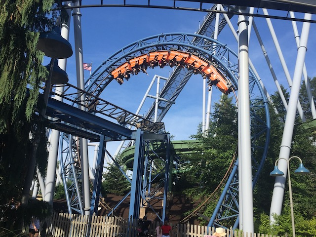
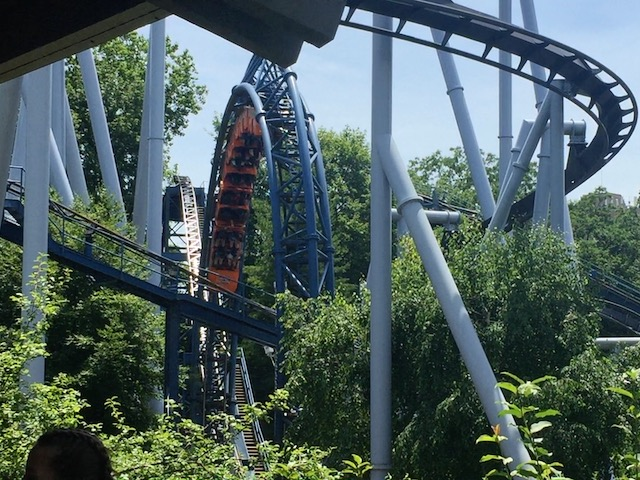
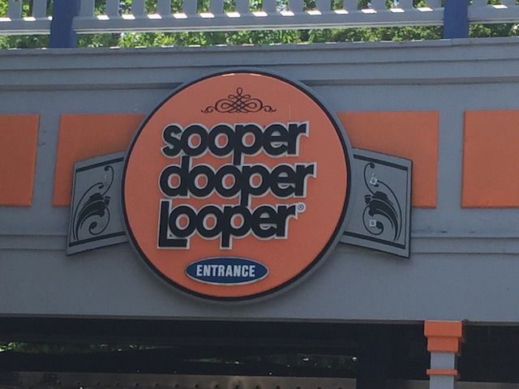

| |
Super Dooper Looper Review

We're here at Hersheypark. Today's ride we'll be reviewing for you is Super Dooper Looper. First off, really cool name for a coaster. Second of all, this is the parks looping coaster. It's a really good coaster to introduce a newbie coaster enthusiast to the concept of going upside down. After all, this is....the Super Dooper Looper. And yeah. It's a fun one. Get in the restraints, pull down the lap bars, and we're off! We head up the lifthill. Get a great view of Great Bear (if you could shoot a POV and got lucky with timing, there would be some amazing Great Bear shots here. Not gonna lie). We soon reach the top, and head around a turn. Go down the first drop. Yeah. It's not anything special. But it gives us some speed and is fun. So its doing its job. And then of course, we come to the highlight of the ride. The part that makes this the Super Dooper Looper. The loop. It's nothing special for a coaster enthusiast. But again, it's still fun. And for a beginner, it's a good loop to hook them into the hobby. Not too intense. See. That wasn't so bad. Now you can ride Storm Runner. >=) We then head up a curved hill. Gee. This is really reminding me of another certain coaster on the West Coast. I wonder which one? We then head down a curved drop and....thread the loop. Yeah. This ride is essentially Diet Revolution. Do you like Revolution, but think there's too much to the ride? Cause yeah. It's basically the highlights reel of Revolution. And yeah. It's still fun. But Revolution is better (I'm not saying that because Six Flags Magic Mountain is my home park! I swear I'm not biased lol). There's just more to it. Anyways, let's see what else Super Dooper Looper has to offer. Head up a tiny hill, go around a turn, and....enter a tunnel. That's another element from Revolution stolen. Sparknotes Revolution status only confirmed further. =P Head out the tunnel and into another sort of S Curve. Hey. At least we're in the trees, which provides us with some shade. That's nice. Oh, hello Skyrush and Great Bear. We then head down a small little drop. Wee! Head up a small hill, go around a banked turn, and curved drop down to the ground. Hey look! It's mocking the final helix by the Grand Carousel on Revolution. This is unquestionably Diet Revolution. And yeah. Curve up into the final brake run. So yeah. It's Diet Revolutiion. Sparknotes Revolution. The Highlights Reel of Revolution. You get what I'm saying. This is obviously by no means, an amazing coaster. But it's a fun little ride. If you're with someone trying to get into inversions, or it just has a short line, the it's worth a ide.
6/10
Location: Hersheypark
Opened: 1977
Built by: Schwarzkopf
Last Ridden: June 25, 2021
Super Dooper Looper Photos




Home
|